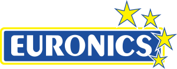

대표 로고대표 브랜드 마크
대표 로고대표 브랜드 마크유로닉스 Euronics
유로닉스(Euronics)는 독립 전자제품 소매상들이 구매력과 자원을 공유하기 위해 결성한 범유럽 가전 유통 협동 연합이다.
최종 업데이트
유로닉스는 어떤 브랜드인가
유로닉스는 유럽 최대 규모의 전자제품 전문 소매 연합으로, 독립 전자상들이 공동구매력을 확보하기 위해 1990년 네덜란드 암스테르담에서 결성한 국제 바잉그룹이다. 독일·이탈리아·스페인·벨기에·네덜란드 5개국 단체가 모여 출범했고, 1990년대 초 공동 매입 계약 체계를 구축한 것과 이후 37개국으로 확장하며 유럽 전역의 전문점 네트워크로 성장한 것이 두 전환점이다.
현재 37개국에 1만1천여 독립 전자 소매점을 묶어 약 5만 명이 일하는 거대 협의체로 자리 잡았다.
유로닉스는 어떻게 봐야 할까
유로닉스의 본질은 단일 체인이 아니라 독립 소매상들의 연합이라는 점에 있다. 각 매장은 소유와 경영이 독립적이지만, 국제 본부가 제조사와의 대량 매입 협상을 대행해 회원들이 대형 양판점에 맞설 가격 경쟁력을 갖추도록 한다.
이는 자본 통합 없이 규모의 경제를 확보하는 협동조합형 모델로, 메디아마르크트 같은 직영 대형 체인과 근본적으로 다르다. 차별화 축은 전문 인력의 상담과 사후 서비스이며, 가격은 공동구매로 방어한다.
한국 독자에게는 동네 전자 대리점들이 하나의 브랜드 우산 아래 협상력을 모으는 농협·하나로마트식 연합 모델로 이해하면 가깝다. 온라인과 글로벌 양판점의 공세 속에서 전문점이 어떻게 생존을 설계하는지 보여주는 사례다.
유로닉스는 어떻게 시작되고 성장했나
1990년 무렵 유럽 가전·전자 유통은 세계화와 대형 양판점의 부상으로 구조적 격변을 맞았다. 개별 전자상들은 규모 큰 체인의 매입 단가와 광고력에 밀려 생존을 위협받았다.
이에 독일·이탈리아·스페인·벨기에·네덜란드의 5개 국가 단체가 1990년 손을 잡고, 독립성을 지키면서도 공동으로 협상력을 모으는 국제 연합을 결성했다. 첫 번째 전환점은 1990년대 초 회원들이 제조사로부터 대량 할인과 우대 조건을 받아내는 공동 매입 계약 체계를 정비한 것이다.
두 번째 전환점은 유럽을 넘어 중동·아프리카·독립국가연합 권역까지 회원 조직을 넓히며 31개국, 다시 37개국으로 확장한 국제화다. 2025년에는 인공지능 검색·상품추천 플랫폼을 회원 전체에 도입하며 디지털 전환에 본격 착수했다.
유로닉스의 브랜드 아이덴티티는 무엇인가
유로닉스가 내세우는 핵심 가치는 전문성이다. 자격을 갖춘 직원, 축적된 제품 지식, 그리고 사람이 직접 응대하는 맞춤 상담을 무기로 삼는다.
비주얼 아이덴티티는 소문자로 짜인 짙은 파란색 워드마크와 왼쪽의 밝은 노란 오각 별로 구성되며, 별의 한 꼭짓점이 e의 가로획 위에 정렬돼 안정감과 강조를 동시에 준다. 파랑은 신뢰와 전문성을, 노랑 별은 회원 매장이 지역에서 길잡이가 되겠다는 약속을 상징한다.
타깃은 가격만이 아니라 설명과 보증을 함께 원하는 실속형 생활 가전 구매자이며, 브랜드 보이스는 위압적이지 않고 친근하면서 전문가다운 조언자의 어조를 지향한다.
유로닉스의 대표 제품과 서비스는 무엇인가
취급 품목은 TV·오디오 같은 영상음향 가전, 냉장고·세탁기·주방기기 등 대형 생활가전, 소형 주방·생활가전, 스마트폰·노트북·PC 등 정보기기와 액세서리, 게임·통신 제품까지 전자 유통 전반을 아우른다. 판매는 회원들이 운영하는 동네 전문 매장과 각국 온라인몰을 함께 쓰는 옴니채널 구조로, 오프라인 상담·설치·수리와 온라인 주문을 연결한다.
유로닉스는 지금 어떤 상태인가
본사는 네덜란드 암스테르담(스히폴 인근)에 두고 있다. 지배구조는 유럽경제이익단체(EEIG) 형태의 협동조합형 연합으로, 모든 매장이 독립 사업자다.
일상 경영은 그룹 내 최대 회원사 대표들과 회원 투표로 선출된 대표들로 구성된 경영이사회가 3년 임기로 맡는다. 규모는 약 37개국, 1만1천여 독립 전자 소매점, 약 5만 명 고용으로 집계되며, 그룹 합산 매출은 200억 유로 안팎으로 추산된다.
다만 연도별 정확한 합산 매출과 회원 국가별 세부 수치는 출처마다 달라 일부는 미공개로 둔다.
유로닉스 로고는 어떻게 변해왔나
대표 로고대표 브랜드 마크
대표 로고 1보관 이미지 1자주 묻는 질문
유로닉스는 어떤 산업의 브랜드인가요?
유로닉스는 리테일·커머스 분야의 브랜드입니다.
유로닉스의 브랜드 아이덴티티는 무엇인가요?
유로닉스가 내세우는 핵심 가치는 전문성이다.
유로닉스의 대표 제품은 무엇인가요?
취급 품목은 TV·오디오 같은 영상음향 가전, 냉장고·세탁기·주방기기 등 대형 생활가전, 소형 주방·생활가전, 스마트폰·노트북·PC 등 정보기기와 액세서리, 게임·통신 제품까지 전자 유통 전반을 아우른다.
유로닉스의 본사는 어디에 있나요?
본사는 네덜란드 암스테르담(스히폴 인근)에 두고 있다.
유로닉스의 공식 웹사이트는 어디인가요?
유로닉스의 공식 웹사이트는 https://www.euronics.com/ 입니다.
출처와 검증
유로닉스 관련 참고: 공식 웹사이트. 브랜드명은 한글과 원어를 함께 표기하되 데이터에 없는 표기는 만들지 않습니다. 기원 국가·설립연도는 검수된 정의문에서 확인된 값을 우선하고, 없을 때만 공식 웹사이트 URL이 일치하는 위키데이터 개체의 값을 씁니다.